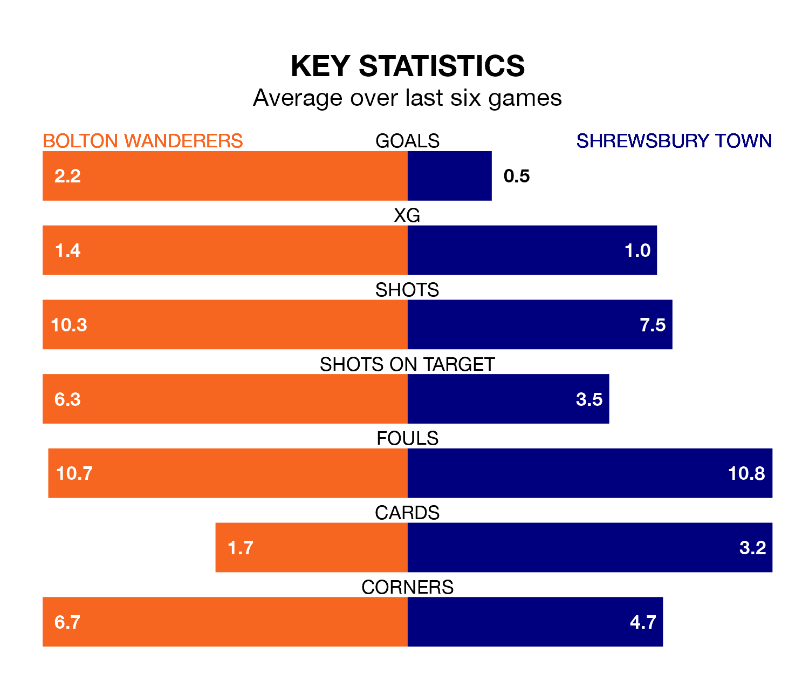

Bolton Wanderers are heavy favourites to keep all three points at home in Tuesday's late kick-off against Shrewsbury Town.
Bolton, who sit third in EFL League One with 43 games played, are priced at 1.3 to seal victory at the University of Bolton Stadium.
Sitting 16 places and 36 points behind them in the table, Shrewsbury are 6.9 to win with *Betting Company*, while the draw is at 4.4.
With 31 goals in 43 games so far this season, Shrewsbury are the league's lowest scorers with 0.7 goals per game. And they are conceding more than average, letting in 61 goals at a rate of 1.4 per game.
Bolton, meanwhile, are above average scorers, with 1.8 goals per game, compared to a league average of 1.3. They have conceded 1.1 goals per game.
In the last 10 years, Bolton and Shrewsbury have played each other on nine occasions. Bolton won six of them, Shrewsbury two, and they drew once.
On average, Bolton scored 1.6 goals and the Shrews 0.9 in those matches.
Their last meeting was on November 7, when Bolton won 2-0 away.
Wanderers are in reasonable form in EFL League One, with three wins and two draws from their last six games.
With a win and two draws over that period, Town's form is much worse – they have taken five points from 18, compared to the home team's 11.
With Nathan Baxter between the sticks, Bolton can rely on one of the league's safest pair of hands. He has kept 13 clean sheets in his 30 appearances this season in EFL League One.
In the Shrews' net, Marko Maroši has 10 clean sheets in 40 games. He has conceded a goal every 76 minutes, 40% more often than the 104 minutes between goals for Baxter.
Bolton's last match was on Saturday, a 1-1 draw against Portsmouth, with Aaron Collins getting the goal for Bolton.
Shrewsbury lost 2-0 against Wycombe Wanderers last time out, also on Saturday.
Tuesday's match will be refereed by Scott Oldham, who has taken charge of 16 EFL League One games so far this season, issuing five red cards and booking 42 players. He has awarded one penalty.
The last Bolton game Oldham refereed was a 4-1 away win against Carlisle United on January 27. His last Shrewsbury match was their 2-1 win at home against Burton Albion on August 15.
Updated: 11:31 (UTC), 15/04/24